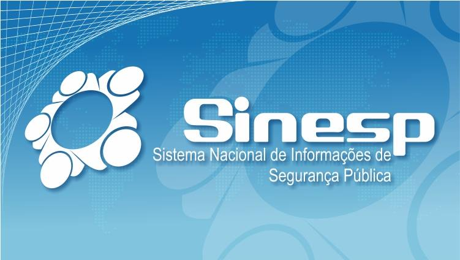

Sistema Nacional de Informações de Segurança Pública
INTELIGÊNCIA

Plataforma nacional integrada
O SINESP/INFOSEG é a plataforma nacional que reúne, em um único ambiente, informações integradas de segurança pública oriundas de diversos órgãos federais e estaduais.
A ANTAQ aderiu à plataforma para apoiar suas atividades de fiscalização e inteligência, ampliando o acesso a bases qualificadas no planejamento e na condução das ações.
Três eixos de consulta (detalhados a seguir)
Consultas operacionais
Apoio imediato às ações de campo e à verificação de dados durante a fiscalização.
Consultas investigativas
Cruzamento de informações para aprofundar análises e subsidiar apurações.
Consultas estratégicas
Visão agregada para planejamento, priorização e inteligência da fiscalização.
Trilha Técnica da Fiscalização · SFC / GPF — ANTAQ
48 / 61